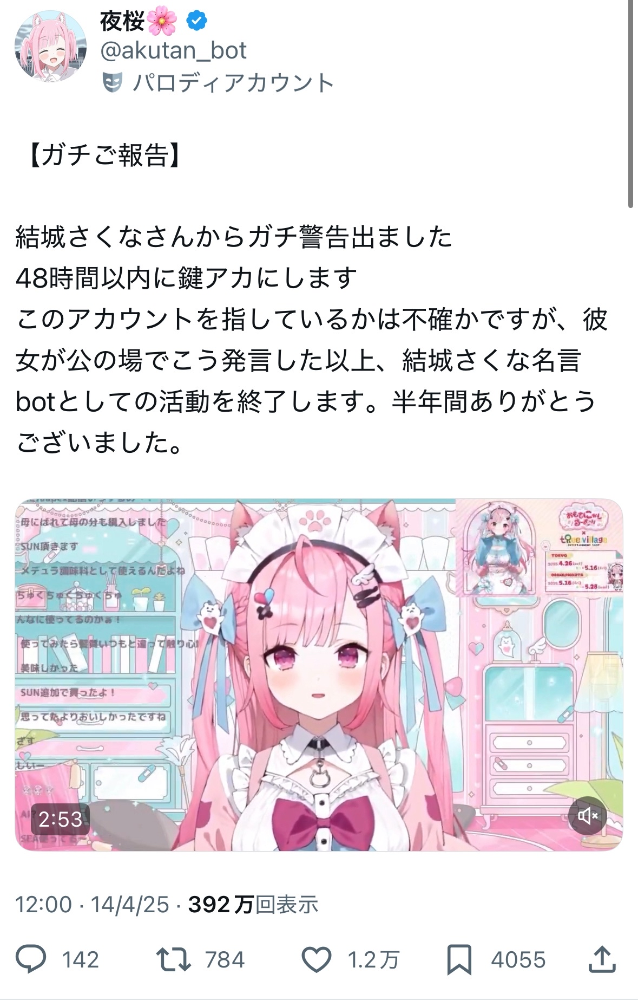

夜桜
界隈系
絵師
ツイ廃廻戦制作陣
ホロライブ名言bot
名言上がり
論争厨
サブカル
万垢
スペース
所属:ホロライブ名言bot→ツイ廃廻戦制作陣
元結城さくな名言bot、ツイ廃廻戦の生みの親。万垢でネタツイやイラストを主に投稿している。定期的に知識人、サブカルオタクの一面を見せ、「おじさん構文炎上事案」では認証バッジを使用してとてつもない長さの評論（お気持ち表明）を投稿するなど万垢では珍しく人格が前面に出ている。
曰く夜空によって現在の「夜桜」という名が与えられた。
前述のとおり万垢にしては人格が本アカで垣間見え、時たまスペースを開く。
現在も名言bot全体の領袖として界隈最高クラスの影響力を保有している。
界隈入りの経緯
名言bot全盛期、結城さくな本人から警告があったため名前を変えざるを得なくなり、結果として界隈入り。
制裁タグ・ファンアートタグ・呼び出しタグ
#夜桜さんちの大制裁